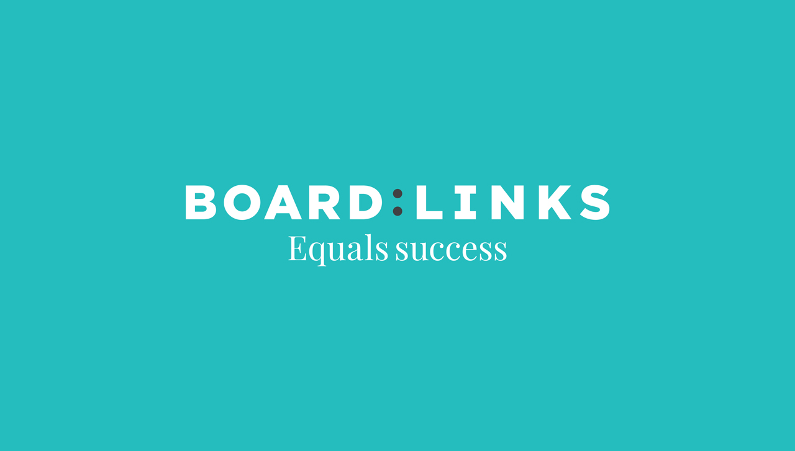
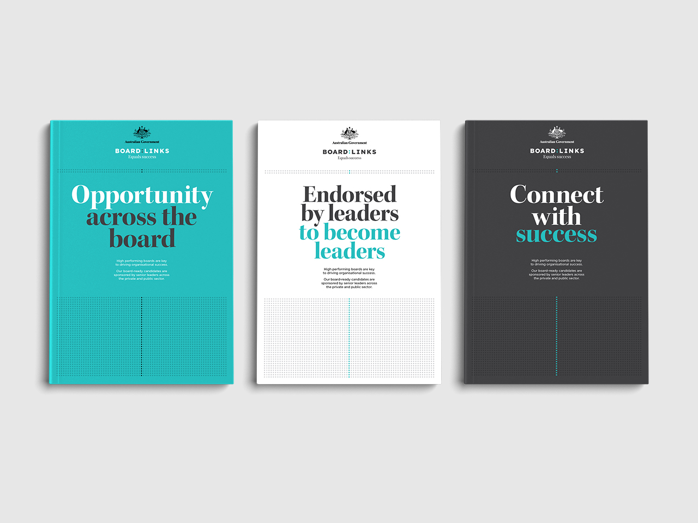

Clare Barrett
Designer and illustrator



BoardLinks
BoardLinks is an initiative connecting a database of leading women to be considered for Australian Government board appointments.
Through the aid of this initiative the Australian Government is aiming to achieve its gender diversity target of a 50/50 ratio of men and women on boards.
This lead to the brand idea for BoardLinks, equality in the form of a 50/50 ratio. This influenced the logo, and became a unique graphic device that talks to the heart of the cause.
Designed at Folk in collaboration with Creative Director Graham Barton and Digital Designer Juan Pablo Castro.
